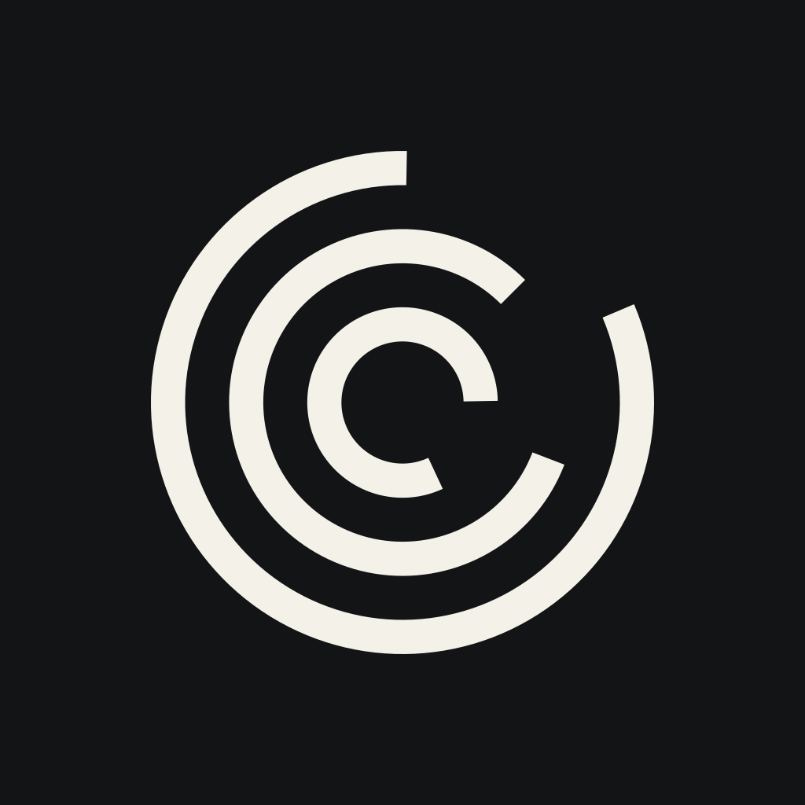

EXPERIMENTAL REASONING LABORATORY
APORIA
The productive
impasse.
01 / DIVERGENT APERTURES
One center. Three open paths.
Shared conditions; different limits.
r = 48 / 32 / 16 · gap = 66°
02 / THE PARTICLE FIELD

ILLUSTRATIVE GEOMETRY
03 / OBSERVATORY STUDY
What survives
an objection?
A common model. Differentiated policies.
An inspectable research record.
04 / PHILOSOPHY × COMPUTATION
An open question.
Source Serif 4 · questions & reading
Source Sans 3 · interface & explanation
IBM Plex Mono · Δ / run / operation
05 / COLOR AS COGNITIVE STATE
Obsidian#121416
Paper#F4F1E9
IrisReasoning
CyanExploration
AmberEvent
Color has a defined role.
Geometry and labels preserve meaning.
06 / SMALL, FIXED, RECOGNIZABLE

APORIA
Research instrument
Divergent Apertures / 02
Research instrument
Divergent Apertures / 02
A standard mark for the instrument.
A separate micro mark for 16 px.
07 / THE EDITORIAL LINE